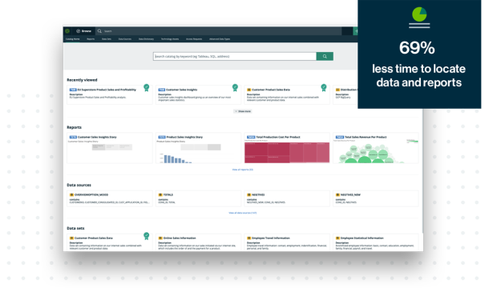

Now available on demand! Christopher Wylie, the Cambridge Analytica
whistleblower, takes a deeper look at the dark side of data and
growing need for global data ethics and privacy.
Your system of record for data. Collibra delivers the only end-to-end
Data Intelligence platform to accelerate digital business
transformation.
Meet the Collibra Data Intelligence Cloud
Find data that matters
Collibra Data Catalog empowers business users to discover,
understand and access trusted data when they need it, so they can
generate impactful insights that drive business outcomes.
More on Data Catalog

510% ROI
Drive revenue and efficient data use
Organizations that use the Collibra Platform achieve a 510%
three-year ROI, according to an independent analysis by IDC
Calculate your potential ROI
173%
Meet critical business needs
Forrester Consulting found that data intelligent organizations had
a 173% advantage over non-data intelligent organizations in better
compliance with regulations and requirements
Find out how in the survey
10 steps
Create a data-driven organization
Gartner has identified key steps Chief Data Officers can take to
overcome roadblocks and succeed in their roles
Read the report
Bringing data to users
“The integration of Collibra with our business intelligence and other
tools has helped us foster understanding in our organization by
bringing data governance to our users. We are excited about the next
phase of our data governance journey.”


.png)
.png)
.png)

.png)
.png)
.png)